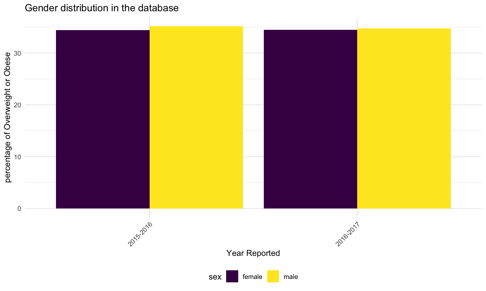

Raw Regression
We planned to use linear regression model to analysis the association between obesity rate and other variables like sex, grade level, economic status, etc. The resulting model can give us a sense of which factor influences obesity rate in teenagers the most.
Data
The main data set for our project is a data set from The Student Weight Status Category Reporting System (SWSCR). SWSCR collects weight status category data and includes separate estimates of the percent of students overweight, obese and overweight or obese for all reportable grades within the county and/or region and by grade groups (elementary and middle/high). It can be accessed at here. This dataset has a range from 2010 to 2019.
We also combined three extra datasets to examine the factors of economic status and food access ability on weight status. Economic status dataset can be accessed here. Food access ability dataset can be accessed here. Race dataset can be accessed here.
Basic variables that we are interested in:
- Sex: Female and male
- Grade Level: Elementary, Middle/High
- Weight Status: Underweight, health weight, overweight or obese based on BMI for age percentile. For this project, we focus on the overweight or obese student percentage which are estimates of based on all reportable grades within the county and/or region and by grade groups.
- Economic Status
- Food Access Ability
- Race
Exploratory data analysis
Sex
The graph below shows that more male students are in the overweight or obese category each year than female students.It seems like the percentage for male in the overweight or obese category slightly decreases and female slightly increases over years.

Grade Level
The graph below shows that students in middle/high school grade level tend to have higher percentage than the elementary students in overweight or obese category each year. There also seems to be an increase in the overweight or obese percentage for the middle or high school students while a decrease for the elementary students over years.

Economic Status
## `summarise()` ungrouping output (override with `.groups` argument)From the graph we can see that there is a general trend that if the median income is low, the overweight or obese percent in students are higher. Two of the most richest county in NY have the least percentage in overweight or obese student.
Food Access Ability
From the graph we can see that there is a general trend that if food insecurity percentage is high, the the overweight or obese percent in students are higher. Two of the counties with the lowest food insecurity percentage in NY have the least percentage in overweight or obese student.
Race
## New names:
## * `` -> ...1## Warning: Expected 2 pieces. Additional pieces discarded in 2 rows [31, 45].Correlation graph
#cor(patient_df)
#cor(combine4)Elaine Xu (yx2640), Rio Yan(xy2476), Jiayi Zhou(jz3336), Ximeng Zhao(xz3032)
Visualizations and analyses performed using R (v3.6.1) and RStudio (v1.2.1335).
Additional interactivity added using plotly (v4.9.0) and Shiny (v1.3.2).
Click here to see details of this project.
2020